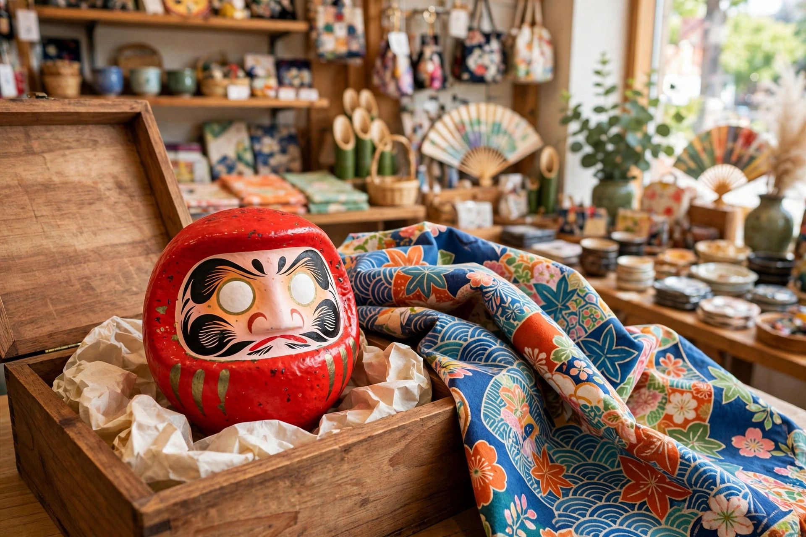

だるまを海外へ送るときの梱包と関税の基本

だるまを海外へ送るときの要点は3つです。①梱包は「箱の中で動かさない・面で支える」が基本で、張り子は軽い反面、一点に圧がかかると凹みます。②送り状と税関告知書は、国際郵便マイページサービスで作成できます。③関税は送り先の国が輸入時に課すもので、分類や金額は送る側では断定できません。迷う場合は税関の事前教示制度で確認できます。
この記事の範囲 ― 「贈る」話と「送る」話は別です
海外の方へだるまを贈る際の選び方（サイズ・色・英語の説明文例）は、海外への贈り物にだるまの記事でまとめています。この記事はその先の実務、つまり「選んだだるまを、壊さず・止められずに海外の住所へ届ける」ための梱包と発送手続きに絞ります。個人が贈り物を送る場合と、販売した商品を発送する場合で、必要な書類が少し変わる点もあわせて整理します。
梱包の手順 ― 凹ませないための4ステップ
だるまの本体は紙を貼り重ねた張り子です。落としても割れることはまれですが、輸送中の圧迫や一点への荷重で凹むことがあります。梱包は次の順で進めます。
- 1. 内装で包む：顔の面と底面を中心に、緩衝材（エアキャップや薄紙）で全体を包みます。名入れや金文字の部分に硬いものが直接当たらないようにしてください。
- 2. 箱の中で固定する：箱に入れたら隙間を緩衝材で埋め、だるまが上下左右に動かない状態にします。目安は、封をする前に箱を軽く振って音がしないことです。
- 3. 外箱は二重か厚手のものを：国際輸送では荷物が積み重なります。上面に荷重がかかる前提で、薄い箱は避け、必要に応じて内箱＋外箱の二重にします。
- 4. 表記を添える：壊れ物ではなく「凹みやすいもの」です。取扱注意の表記は各配送サービスの様式に従い、過剰な表記より中身の固定を優先してください。
送り方と送り状 ― 国際郵便マイページで作成する
日本郵便の国際郵便では、送り状は「国際郵便マイページサービス」で作成します。日本郵便のオンラインシッピングツールの案内では、依頼主・届け先・内容品（品名、重量、価格、個数）を登録し、税関告知書・インボイス関連の情報まで入力して送り状を印刷する流れが示されています。内容品の詳細は正確に入力することが求められています。
物品を送る場合は税関告知書（CN22またはCN23）の添付が必要で、販売品など商用の物品ではインボイスが求められます。必要な書類の種類や枚数、送れるサイズ・重量の制限は送り先の国・地域ごとに異なります。差し出し前に、日本郵便の国・地域別情報（国際郵便条件表）で宛先国の条件を確認してください。
関税と分類の基本 ― 送る側が断定できないこと
関税は、送り先の国が輸入の際に課す税金です。どの分類（税番）に当たるかで税率が変わり、申告価格も影響します。そのため「関税はいくらか」を送る側が事前に断定することはできません。受け取る側に税金の負担が生じる場合があることは、発送前に相手へ伝えておくのが安全です。
分類や税率を事前に確かめたい場合は、税関の「事前教示制度」が使えます。輸入を予定している貨物の関税分類を文書で照会し、文書で回答を受ける制度で、税関の案内では、文書による回答内容は原則3年間、全国の税関で尊重されるとされています。だるまのように素材と形状から分類を判断する品目は、自己判断で決めず、必要に応じてこの制度で確認するのが確実です。
送れないものの確認 ― だるま本体より同梱品に注意
だるま本体は、日本郵便が公表している「国際郵便として送れないもの」には当たらず、通常はそのまま送れます。注意が要るのは同梱品です。スプレー缶、香水、アルコール濃度の高いもの、マニキュア、モバイルバッテリーなどは国際郵便では送れません（航空危険物など）。贈り物に小物を添える場合は、日本郵便の郵送禁止品の案内で事前に確認してください。
参考リンク（一次情報）
- 日本郵便「国際郵便として送れないもの」
- 日本郵便「オンラインシッピングツール（国際郵便マイページサービス）」
- 税関「関税分類の事前教示制度（案内パンフレット）」
よくある質問
Q. だるまは国際郵便で海外へ送れますか？
送れます。だるま本体は国際郵便の郵送禁止品には当たらず、国際郵便マイページサービスで送り状と税関告知書を作成して差し出せます。ただし送り先の国・地域ごとに取扱条件や制限が異なるため、差し出し前に日本郵便の国・地域別情報で確認してください。同梱品にスプレー缶や香水など国際郵便で送れないものが含まれていないかも、あわせて確認が必要です。
Q. 梱包でいちばん大事なことは何ですか？
箱の中でだるまが動かないように固定することです。張り子は軽い一方で、一点に圧がかかると凹みます。緩衝材で包み、隙間を埋めて面で支え、振っても音がしない状態にしてから封をしてください。
Q. 関税は誰が払うのですか？
関税は送り先の国が輸入の際に課すもので、受け取る側が負担する形になるのが一般的です。金額は国・分類・申告価格によって決まるため、送る側が事前に断定はできません。相手に負担が生じる可能性があることは、発送前に伝えておくと行き違いを防げます。
Q. 販売目的で送る場合は、贈り物と何が違いますか？
税関告知書に加えて、インボイスの添付が求められます。国際郵便マイページサービスでは、送り状の作成とあわせて税関告知書・インボイス関連の情報も入力できます。必要書類の枚数や条件は送り先の国・地域ごとに異なるため、国・地域別情報で確認してください。
まとめ
だるまの海外発送は、梱包で凹みを防ぎ、送り状と税関告知書を国際郵便マイページで正しく作り、関税は「送り先国のルールで決まるもの」として相手と共有する。この3点を押さえれば、大きな行き違いは防げます。分類に迷う品目や繰り返し発送する場合は、税関の事前教示制度で確認してから運用を固めてください。
海外への発送・卸売のご相談
DARUMA WORKSでは、だるまの企画・製造・卸売・OEMを手がけ、国内外への卸売の相談も受け付けています。名入れ・オリジナルだるまの制作は事業紹介をご覧のうえ、お問い合わせフォームからご連絡ください。